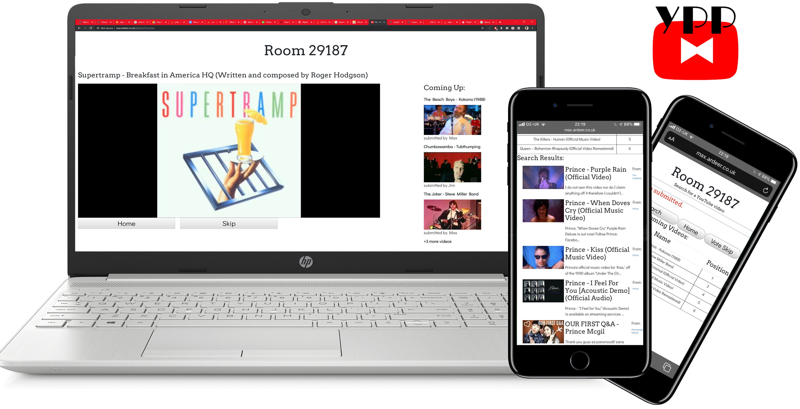
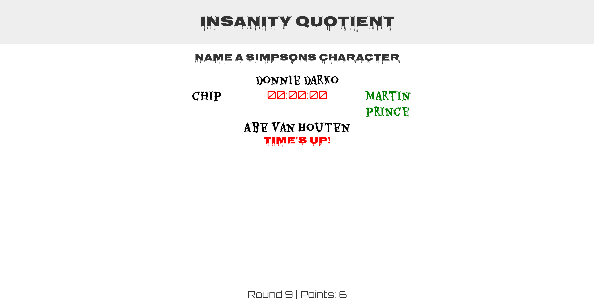

Web Projects
--Click on project names to expand content--
- Youtube
Party
Playlist
This project was born after I was unable to find an easy way for my friends and I to contribute to a shared YouTube playlist. We would often want to show each other videos or stream music but we had no way of queueing them up. YouTube Party Playlist solves this issue by allowing user's to create a "room" where friends can submit YouTube videos on-the-fly to a shared queue. No login is required, you simply need a host device (e.g a laptop or smart TV) to create the room and everyone can connect to it using a mobile device. Features include a search engine for YouTube videos, a queue for users to see what position in the queue their songs are "voteskip" which skips the current video if enough people vote to skip, a blacklist for DOS attacks and an AJAX preview of the upcoming songs which updates as soon as a new video is submitted. The host also has the ability to skip the current song immediately and restart the entire playlist "from the top" after the playlist ends. The host can also leave the room and rejoin at anytime, resuming the playlist Technologies used: HTML, CSS, PHP, JS+jQuery, AJAX, MySQL
 - GoEatDirect
As part of my work with GoEatDirect, I helped develop a food ordering portal for several restaurants. This service included a custom branded website, app and tablet that restaurants could install to receive orders. Specifically, I was an admin for the AWS servers, created the push notification system on the native app, created several parts of the WordPress site, used Selenium to scrape data and was in charge of publishing the apps to the Google Play Store and Apple App Store. We have recently our beta testing stage and are now signing up customers at a rapid pace. Technologies used: WordPress, WooCommerce, Stripe, AWS, React Native, Selenium, OneSignal, Zapier
- Placeholdr
A django project I helped develop as part of my second year at Uni (alongside Guillaume de Susanne d'Epinay, Leo Papaloizos and Henry Togwell), this site acts as a social media platform for users to create and recommend trips and destinations. Users can create accounts, which feature a reputation system and recommended trips. Users can also create individual places/landmarks and then create a "trip" that consists of a series of existing or custom made places. This then generates a route on the google maps API, allowing users to map their journey and see if it is feasible. Users can leave reviews on places and trips, and can add #tags. These #tags will show up at the top of the place/trip. A search system matches a place/trips name, description or #tags. Technologies used: Django, Python, Bootstrap, AJAX, Google Maps API
- Insanity
Quotient
A general knowledge quiz game that asks relatively easy questions but only gives you 1 second to answer. The player can use arrow keys (on a non-mobile device) or click/tap on the answers as they appear. In the future I want to add more questions and other ways of distracting the player as the rounds advance, such as making the font more illegible and hiding parts of the answers. Technologies used: Bootstrap, JS+jQuery



Other Projects
--Click on project names to expand content--
- NutriPlotter
My third year project, in which I was later asked to be sole developer for due to my passion and work ethic during the project. The app was developed closely alongside the University of Glasgow School of Medicine to ensure all nutritional data is accurate and complete for all foods, so user's can be sure of what they're consuming. As such, our team made the decision to not allow user submitted foods as this could violate the integrity of the data. It consists of an app that "gamifies" nutritional info, by allowing users to create a "plate" of food which they can adjust quantities of in order to get as close to a well-balances plate of food as they can. They can then submit this plate for scoring, which is judged based upon 13 key nutritional categories. Features include an interactive food search with over 3000+ existing foods, custom icons for each category of food, several visualisations of nutritional information, the ability to save and tweak a plate afterwards, a leaderboard, facebook integration, and many more. Several additional features are also being planned including a food comparison system that shows relative nutrients, a "healthier option" replacement system, that recommends a similar, but healthier alternative to a food on the plate and food filtering for people with dietary requirements. Technologies used: React Native, Expo, MongoDB
- Federated
Recommender System
My fourth year individual project, it concerns building a federated recommender system that queries several backend recommender engines running different algorithms and generates a recommendation using the engine with the highest scoring metric. This will ideally more often give a more accurate recommendation list than traditional recommender systems. Currently a WIP and hence the git repo is private and the website is not yet live. Technologies used: Python, SurPRISE, Spotlight, Light.fm
My CV
Contact Me
Email: max@burtoninternet.com
Phone Number: +44 7921 403749
Github: github.com/maxburton
LinkedIn: Max Kirker Burton